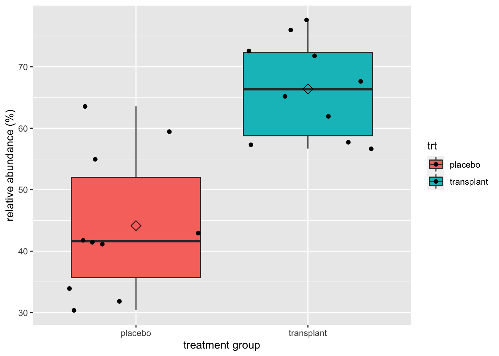
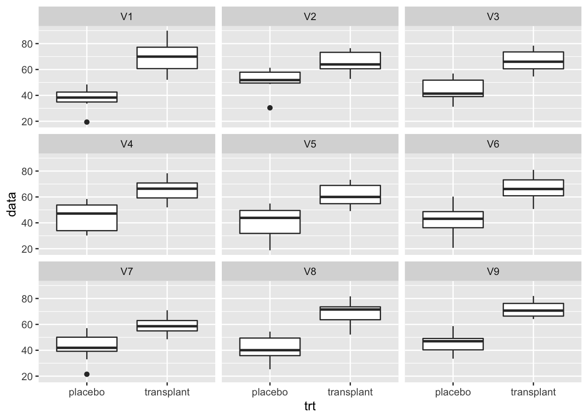
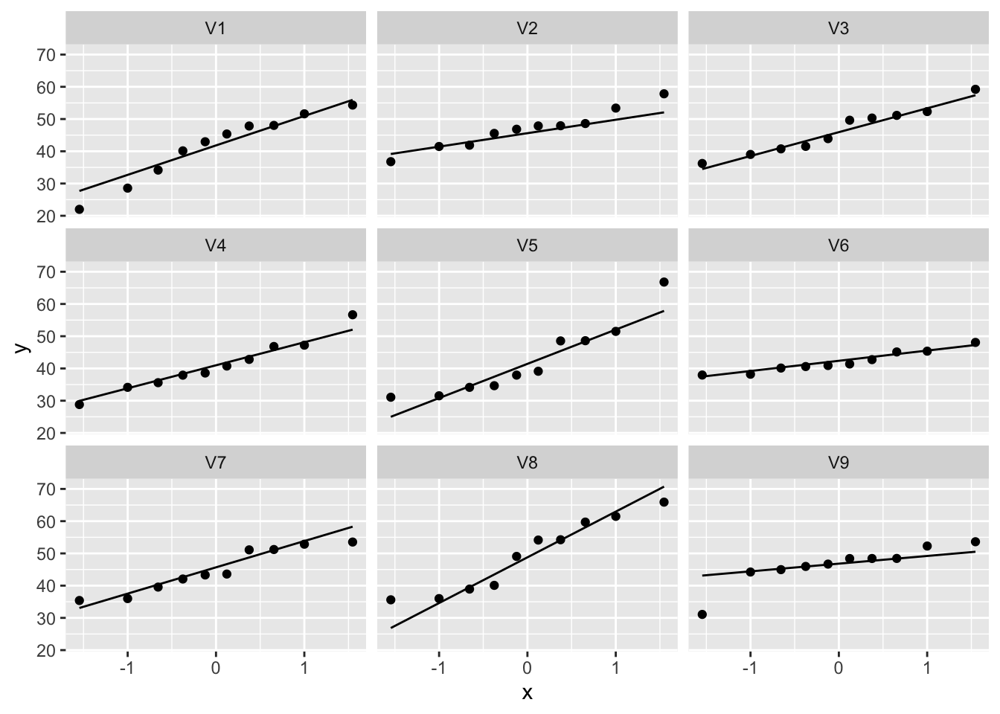
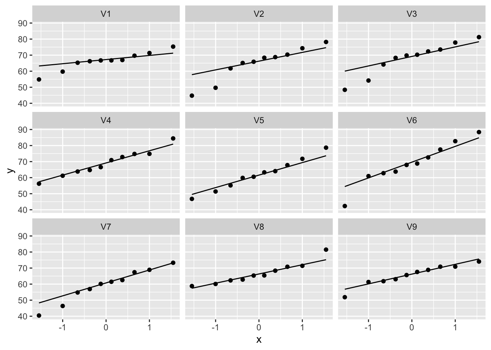

Smelly armpit dataset
Smelly armpits are not caused by sweat, itself. The smell is caused by specific micro-organisms belonging to the group of Corynebacterium spp. that metabolise sweat. Another group of abundant bacteria are the Staphylococcus spp., these bacteria do not metabolise sweat in smelly compounds.
The CMET-group at Ghent University does research to on transplanting the armpit microbiome to save people with smelly armpits.
Proposed Therapy:
- Remove armpit-microbiome with antibiotics
- Influence armpit microbiome with microbial transplant, see this 2 minute talk on youtube
Experiment:
- 20 students with smelly armpits are attributed to one of two treatment groups
- placebo (only antibiotics)
- transplant (antibiotica followed by microbial transplant).
- The microbiome is sampled 6 weeks upon the treatment
- The relative abundance of Staphylococcus spp. on Corynebacterium spp. + Staphylococcus spp. in the microbiome is measured via DGGE (Denaturing Gradient Gel Electrophoresis).
Goal
The overarching goal of this research was to assess if the relative abundance Staphylococcus spp. in the microbiome of the armpit is affected by transplanting the microbiome. To this end the researchers randomized patients to two treatment: A treatment with antibiotics only and a treatment with antibiotics and a microbial transplant.
In the tutorial on hypotheses testing we will use a formal statistical test to generalize the results from the sample to that of the population.
Import the dataset
#Load the libraries
library(tidyverse)
Import the data
ap <- read_csv("https://raw.githubusercontent.com/statOmics/PSLS21/data/armpit.csv")
## Rows: 20 Columns: 2
## ── Column specification ────────────────────────────────────────────────────────
## Delimiter: ","
## chr (1): trt
## dbl (1): rel
##
## ℹ Use `spec()` to retrieve the full column specification for this data.
## ℹ Specify the column types or set `show_col_types = FALSE` to quiet this message.
## Rows: 20
## Columns: 2
## $ trt <chr> "placebo", "placebo", "placebo", "placebo", "placebo", "placebo", …
## $ rel <dbl> 54.99208, 31.84466, 41.09948, 59.52064, 63.57341, 41.48649, 30.440…
Data Exploration
A crucial first step in a data analysis is to visualize and to explore the raw data.
ap %>% ggplot(aes(x=trt,y=rel,fill=trt)) +
geom_boxplot(outlier.shape=NA) +
geom_point(position="jitter") +
ylab("relative abundance (%)") +
xlab("treatment group") +
stat_summary(fun.y=mean, geom="point", shape=5, size=3, color="black", fill="black")
## Warning: `fun.y` is deprecated. Use `fun` instead.

We clearly see that, on average, the subjects who had a microbial transplant have a higher relative abundance of Staphylococcus spp. But is this difference statistically significant so that we can generalized what we observe in the sample to the population?
We can test this with an unpaired, two-sample t-test, which falsifies the null hypothesis that there is on average no difference in relative abundance of Staphylococcus in the armpit microbiome between the transplant and the placebo group against the alternative hypothesis that there is a difference in average abundance of Staphyloccocus in the armpit microbiome between the transplant and placebo treatment.
But, before we can start the analysis, we must check if all assumptions to perform a t-test are met.
Analysis
Check the assumptions
The observations are independent. This has to be guaranteed by the design.
The data (rel) are normally distributed in each of the groups
The variability within both groups is similar.
To check the normality assumption, we will use QQ plots.
ap %>%
ggplot(aes(sample=rel)) +
geom_qq() +
geom_qq_line() +
facet_grid(cols = vars(trt))

We can see that all of the data lies nicely around the quantile-quantile line (black line). As such, we may assume that our data are normally distributed.
For the third assumption, we must compare the within-group variability of both groups. We can do this visually:
ap %>% ggplot(aes(x=trt,y=rel)) +
geom_boxplot(outlier.shape=NA) +
geom_point(position="jitter") +
ylab("relative abundance (%)") +
xlab("treatment group") +
stat_summary(fun.y=mean, geom="point", shape=5, size=3, color="black", fill="black")
## Warning: `fun.y` is deprecated. Use `fun` instead.

Here we can see that the interquartile range is approximately equal for groups.
As all three assumptions are met we may continue with performing the unpaired two-sample t-test.
Hypothesis test
placebo_rel <- ap %>%
filter(trt=="placebo") %>%
pull(rel)
transplant_rel <- ap %>%
filter(trt=="transplant") %>%
pull(rel)
output <- t.test(placebo_rel,
transplant_rel,
conf.level = 0.95,
var.equal = TRUE)
output
##
## Two Sample t-test
##
## data: placebo_rel and transplant_rel
## t = -5.0334, df = 18, p-value = 8.638e-05
## alternative hypothesis: true difference in means is not equal to 0
## 95 percent confidence interval:
## -31.53191 -12.96072
## sample estimates:
## mean of x mean of y
## 44.15496 66.40127
Conclusion
On average the relative abundance of Staphylococcus spp. in the microbiome of the armpit in the transplant group is extremely significantly different from that in the placebo group (\(p<<0.001\)). The relative abundance of Staphylococcus spp. is on average 22.2% larger in the transplant group than in the placebo group (95% CI [13.0,31.5]%).
ADDENDUM: Train yourself in checking the assumptions
In order for the learners to get more proficient in evaluating the assumptions we will simulate 9 dataset with sample sizes similar to our data for which the assumptions of normality and equal variance do hold. For the QQ-plots we will only plot the one from one of the groups.
Simulate data
We simulate 9 datasets with the same sample sizes, means and pooled variance as in the sample.
ap <- read_csv("https://raw.githubusercontent.com/statOmics/PSLS21/data/armpit.csv")
## Rows: 20 Columns: 2
## ── Column specification ────────────────────────────────────────────────────────
## Delimiter: ","
## chr (1): trt
## dbl (1): rel
##
## ℹ Use `spec()` to retrieve the full column specification for this data.
## ℹ Specify the column types or set `show_col_types = FALSE` to quiet this message.
nSamp <- 9
## descriptive statistics
apRelSum<-ap %>%
group_by(trt)%>%
summarize_at("rel",
list(mean=~mean(.,na.rm=TRUE),
sd=~sd(.,na.rm=TRUE),
n=function(x) x%>%is.na%>%`!`%>%sum)) %>%
mutate(se=sd/sqrt(n))
sigma <- sqrt(sum(apRelSum$sd^2*(apRelSum$n-1))/(sum(apRelSum$n)-2))
normSim <- matrix(rnorm(sum(apRelSum$n)*nSamp,
mean=c(rep(apRelSum$mean[1],apRelSum$n[1]),
rep(apRelSum$mean[2],apRelSum$n[2])),
sd=sigma),nrow=sum(apRelSum$n)) %>%
as.data.frame %>%
mutate(trt=ap$trt)
Comparisons of variances
normSim %>% gather(samp,data,-trt) %>%
ggplot(aes(x=trt,y=data)) +
geom_boxplot() +
facet_wrap(~samp)

Evaluation of normality
Placebo group
normSim %>%
gather(samp,data,-trt) %>%
filter(trt=="placebo") %>%
ggplot(aes(sample=data)) +
geom_qq() +
geom_qq_line() +
facet_wrap(~samp)

Transplant group
normSim %>%
gather(samp,data,-trt) %>%
filter(trt=="transplant") %>%
ggplot(aes(sample=data)) +
geom_qq() +
geom_qq_line() +
facet_wrap(~samp)

LS0tCnRpdGxlOiAiRXhlcmNpc2UgNS4yOiBIeXBvdGhlc2lzIHRlc3Rpbmcgb24gdGhlIGFybXBpdCBkYXRhc2V0IC0gc29sdXRpb24iCmF1dGhvcjogIkxpZXZlbiBDbGVtZW50IGFuZCBKZXJvZW4gR2lsaXMiCmRhdGU6ICJzdGF0T21pY3MsIEdoZW50IFVuaXZlcnNpdHkgKGh0dHBzOi8vc3RhdG9taWNzLmdpdGh1Yi5pbykiCm91dHB1dDoKICAgIGh0bWxfZG9jdW1lbnQ6CiAgICAgIGNvZGVfZG93bmxvYWQ6IHRydWUKICAgICAgdGhlbWU6IGNvc21vCiAgICAgIHRvYzogdHJ1ZQogICAgICB0b2NfZmxvYXQ6IHRydWUKICAgICAgaGlnaGxpZ2h0OiB0YW5nbwogICAgICBudW1iZXJfc2VjdGlvbnM6IHRydWUKLS0tCgojIFNtZWxseSBhcm1waXQgZGF0YXNldAoKU21lbGx5IGFybXBpdHMgYXJlIG5vdCBjYXVzZWQgYnkgc3dlYXQsIGl0c2VsZi4gVGhlIHNtZWxsIGlzIGNhdXNlZApieSBzcGVjaWZpYyBtaWNyby1vcmdhbmlzbXMgYmVsb25naW5nIHRvIHRoZSBncm91cCBvZgoqQ29yeW5lYmFjdGVyaXVtIHNwcC4qIHRoYXQgbWV0YWJvbGlzZSBzd2VhdC4gQW5vdGhlciBncm91cCBvZiBhYnVuZGFudCBiYWN0ZXJpYQphcmUgdGhlICpTdGFwaHlsb2NvY2N1cyBzcHAuKiwgdGhlc2UgYmFjdGVyaWEgZG8gbm90IG1ldGFib2xpc2Ugc3dlYXQgaW4gc21lbGx5CmNvbXBvdW5kcy4KClRoZSBDTUVULWdyb3VwIGF0IEdoZW50IFVuaXZlcnNpdHkgZG9lcyByZXNlYXJjaCB0byBvbiB0cmFuc3BsYW50aW5nIHRoZSBhcm1waXQKbWljcm9iaW9tZSB0byBzYXZlIHBlb3BsZSB3aXRoIHNtZWxseSBhcm1waXRzLgoKLSBQcm9wb3NlZCBUaGVyYXB5OgogIAkxLiBSZW1vdmUgYXJtcGl0LW1pY3JvYmlvbWUgd2l0aCBhbnRpYmlvdGljcwogICAgMi4gSW5mbHVlbmNlIGFybXBpdCBtaWNyb2Jpb21lIHdpdGggbWljcm9iaWFsIHRyYW5zcGxhbnQsIHNlZSB0aGlzIDIgbWludXRlCiAgICAgICB0YWxrIG9uIFt5b3V0dWJlXShodHRwczovL3lvdXR1LmJlLzlSSUZ5cUxYZFZ3KQoKLSBFeHBlcmltZW50OgoKICAgIC0gMjAgc3R1ZGVudHMgd2l0aCBzbWVsbHkgYXJtcGl0cyBhcmUgYXR0cmlidXRlZCB0byBvbmUgb2YKICAgICAgdHdvIHRyZWF0bWVudCBncm91cHMKICAgIC0gcGxhY2VibyAob25seSBhbnRpYmlvdGljcykKICAgIC0gdHJhbnNwbGFudCAoYW50aWJpb3RpY2EgZm9sbG93ZWQgYnkgbWljcm9iaWFsIHRyYW5zcGxhbnQpLgogICAgLSBUaGUgbWljcm9iaW9tZSBpcyBzYW1wbGVkIDYgd2Vla3MgdXBvbiB0aGUgdHJlYXRtZW50CiAgICAtIFRoZSByZWxhdGl2ZSBhYnVuZGFuY2Ugb2YgKlN0YXBoeWxvY29jY3VzIHNwcC4qIG9uCiAgICAgICpDb3J5bmViYWN0ZXJpdW0gc3BwLiogKyAqU3RhcGh5bG9jb2NjdXMgc3BwLiogaW4gdGhlCiAgICAgIG1pY3JvYmlvbWUgaXMgbWVhc3VyZWQgdmlhIERHR0UgKCpEZW5hdHVyaW5nIEdyYWRpZW50IEdlbAogICAgICBFbGVjdHJvcGhvcmVzaXMqKS4KCiMgR29hbAoKVGhlIG92ZXJhcmNoaW5nIGdvYWwgb2YgdGhpcyByZXNlYXJjaCB3YXMgdG8gYXNzZXNzIGlmIHRoZSByZWxhdGl2ZSBhYnVuZGFuY2UKKlN0YXBoeWxvY29jY3VzIHNwcC4qCmluIHRoZSBtaWNyb2Jpb21lIG9mIHRoZSBhcm1waXQgaXMgYWZmZWN0ZWQgYnkgdHJhbnNwbGFudGluZyB0aGUgbWljcm9iaW9tZS4KVG8gdGhpcyBlbmQgdGhlIHJlc2VhcmNoZXJzIHJhbmRvbWl6ZWQgcGF0aWVudHMgdG8gdHdvIHRyZWF0bWVudDoKQSB0cmVhdG1lbnQgd2l0aCBhbnRpYmlvdGljcyBvbmx5IGFuZCBhIHRyZWF0bWVudCB3aXRoCmFudGliaW90aWNzIGFuZCBhIG1pY3JvYmlhbCB0cmFuc3BsYW50LgoKSW4gdGhlIHR1dG9yaWFsIG9uIGh5cG90aGVzZXMgdGVzdGluZyB3ZSB3aWxsIHVzZSBhIGZvcm1hbCBzdGF0aXN0aWNhbCB0ZXN0IHRvCmdlbmVyYWxpemUgdGhlIHJlc3VsdHMgZnJvbSB0aGUgc2FtcGxlIHRvIHRoYXQgb2YgdGhlIHBvcHVsYXRpb24uCgojIEltcG9ydCB0aGUgZGF0YXNldAoKYGBge3IsIG1lc3NhZ2U9RkFMU0V9CiNMb2FkIHRoZSBsaWJyYXJpZXMKbGlicmFyeSh0aWR5dmVyc2UpCmBgYAoKSW1wb3J0IHRoZSBkYXRhCgpgYGB7cn0KYXAgPC0gcmVhZF9jc3YoImh0dHBzOi8vcmF3LmdpdGh1YnVzZXJjb250ZW50LmNvbS9zdGF0T21pY3MvUFNMUzIxL2RhdGEvYXJtcGl0LmNzdiIpCmBgYAoKYGBge3J9CmdsaW1wc2UoYXApCmBgYAoKIyBEYXRhIEV4cGxvcmF0aW9uCgpBIGNydWNpYWwgZmlyc3Qgc3RlcCBpbiBhIGRhdGEgYW5hbHlzaXMgaXMgdG8gdmlzdWFsaXplIGFuZCB0byBleHBsb3JlIHRoZSByYXcKZGF0YS4KCmBgYHtyfQphcCAlPiUgZ2dwbG90KGFlcyh4PXRydCx5PXJlbCxmaWxsPXRydCkpICsKICBnZW9tX2JveHBsb3Qob3V0bGllci5zaGFwZT1OQSkgKwogIGdlb21fcG9pbnQocG9zaXRpb249ImppdHRlciIpICsKICB5bGFiKCJyZWxhdGl2ZSBhYnVuZGFuY2UgKCUpIikgKwogIHhsYWIoInRyZWF0bWVudCBncm91cCIpICsKICBzdGF0X3N1bW1hcnkoZnVuLnk9bWVhbiwgZ2VvbT0icG9pbnQiLCBzaGFwZT01LCBzaXplPTMsIGNvbG9yPSJibGFjayIsIGZpbGw9ImJsYWNrIikKYGBgCgpXZSBjbGVhcmx5IHNlZSB0aGF0LCBvbiBhdmVyYWdlLCB0aGUgc3ViamVjdHMgd2hvIGhhZCBhCm1pY3JvYmlhbCB0cmFuc3BsYW50IGhhdmUgYSBoaWdoZXIgcmVsYXRpdmUgYWJ1bmRhbmNlIG9mClN0YXBoeWxvY29jY3VzIHNwcC4gQnV0IGlzIHRoaXMgZGlmZmVyZW5jZSBzdGF0aXN0aWNhbGx5CipzaWduaWZpY2FudCogc28gdGhhdCB3ZSBjYW4gZ2VuZXJhbGl6ZWQgd2hhdCB3ZSBvYnNlcnZlCmluIHRoZSBzYW1wbGUgdG8gdGhlIHBvcHVsYXRpb24/CgpXZSBjYW4gdGVzdCB0aGlzIHdpdGggYW4gdW5wYWlyZWQsIHR3by1zYW1wbGUgdC10ZXN0LCB3aGljaCBmYWxzaWZpZXMgdGhlIG51bGwKaHlwb3RoZXNpcyB0aGF0IHRoZXJlIGlzIG9uIGF2ZXJhZ2Ugbm8gZGlmZmVyZW5jZSBpbiByZWxhdGl2ZSBhYnVuZGFuY2Ugb2YKKlN0YXBoeWxvY29jY3VzKiBpbiB0aGUgYXJtcGl0IG1pY3JvYmlvbWUgYmV0d2VlbiB0aGUgdHJhbnNwbGFudCBhbmQgdGhlCnBsYWNlYm8gZ3JvdXAgYWdhaW5zdCB0aGUgYWx0ZXJuYXRpdmUgaHlwb3RoZXNpcyB0aGF0IHRoZXJlIGlzIGEgZGlmZmVyZW5jZQppbiBhdmVyYWdlIGFidW5kYW5jZSBvZiAqU3RhcGh5bG9jY29jdXMqIGluIHRoZSBhcm1waXQgbWljcm9iaW9tZSBiZXR3ZWVuCnRoZSB0cmFuc3BsYW50IGFuZCBwbGFjZWJvIHRyZWF0bWVudC4KCkJ1dCwgYmVmb3JlIHdlIGNhbiBzdGFydCB0aGUgYW5hbHlzaXMsIHdlIG11c3QgY2hlY2sgaWYgYWxsIGFzc3VtcHRpb25zIHRvCnBlcmZvcm0gYSB0LXRlc3QgYXJlIG1ldC4KCiMgQW5hbHlzaXMKCiMjIENoZWNrIHRoZSBhc3N1bXB0aW9ucwoKMS4gVGhlIG9ic2VydmF0aW9ucyBhcmUgaW5kZXBlbmRlbnQuIFRoaXMgaGFzIHRvIGJlCmd1YXJhbnRlZWQgYnkgdGhlIGRlc2lnbi4KCjIuIFRoZSBkYXRhIChyZWwpIGFyZSBub3JtYWxseSBkaXN0cmlidXRlZCBpbiBlYWNoIG9mIHRoZSBncm91cHMKCjMuIFRoZSB2YXJpYWJpbGl0eSB3aXRoaW4gYm90aCBncm91cHMgaXMgc2ltaWxhci4KClRvIGNoZWNrIHRoZSBub3JtYWxpdHkgYXNzdW1wdGlvbiwgd2Ugd2lsbCB1c2UgUVEgcGxvdHMuCgpgYGB7cn0KYXAgJT4lCiAgZ2dwbG90KGFlcyhzYW1wbGU9cmVsKSkgKwogIGdlb21fcXEoKSArCiAgZ2VvbV9xcV9saW5lKCkgKwogIGZhY2V0X2dyaWQoY29scyA9IHZhcnModHJ0KSkKYGBgCgpXZSBjYW4gc2VlIHRoYXQgYWxsIG9mIHRoZSBkYXRhIGxpZXMgbmljZWx5IGFyb3VuZCB0aGUgcXVhbnRpbGUtcXVhbnRpbGUKbGluZSAoYmxhY2sgbGluZSkuIEFzIHN1Y2gsIHdlIG1heSBhc3N1bWUgdGhhdCBvdXIgZGF0YSBhcmUgbm9ybWFsbHkgZGlzdHJpYnV0ZWQuCgpGb3IgdGhlIHRoaXJkIGFzc3VtcHRpb24sIHdlIG11c3QgY29tcGFyZSB0aGUgd2l0aGluLWdyb3VwCnZhcmlhYmlsaXR5IG9mIGJvdGggZ3JvdXBzLiBXZSBjYW4gZG8gdGhpcyB2aXN1YWxseToKCmBgYHtyfQphcCAlPiUgIGdncGxvdChhZXMoeD10cnQseT1yZWwpKSArCiAgZ2VvbV9ib3hwbG90KG91dGxpZXIuc2hhcGU9TkEpICsKICBnZW9tX3BvaW50KHBvc2l0aW9uPSJqaXR0ZXIiKSArCiAgeWxhYigicmVsYXRpdmUgYWJ1bmRhbmNlICglKSIpICsKICB4bGFiKCJ0cmVhdG1lbnQgZ3JvdXAiKSArCiAgc3RhdF9zdW1tYXJ5KGZ1bi55PW1lYW4sIGdlb209InBvaW50Iiwgc2hhcGU9NSwgc2l6ZT0zLCBjb2xvcj0iYmxhY2siLCBmaWxsPSJibGFjayIpCmBgYAoKSGVyZSB3ZSBjYW4gc2VlIHRoYXQgdGhlIGludGVycXVhcnRpbGUgcmFuZ2UgaXMgYXBwcm94aW1hdGVseSBlcXVhbCBmb3IgZ3JvdXBzLgoKQXMgYWxsIHRocmVlIGFzc3VtcHRpb25zIGFyZSBtZXQgd2UgbWF5IGNvbnRpbnVlIHdpdGgKcGVyZm9ybWluZyB0aGUgdW5wYWlyZWQgdHdvLXNhbXBsZSB0LXRlc3QuCgojIyBIeXBvdGhlc2lzIHRlc3QKCmBgYHtyfQpwbGFjZWJvX3JlbCA8LSBhcCAlPiUKICBmaWx0ZXIodHJ0PT0icGxhY2VibyIpICU+JQogIHB1bGwocmVsKQoKdHJhbnNwbGFudF9yZWwgPC0gYXAgJT4lCiAgZmlsdGVyKHRydD09InRyYW5zcGxhbnQiKSAlPiUKICBwdWxsKHJlbCkKCm91dHB1dCA8LSB0LnRlc3QocGxhY2Vib19yZWwsCiAgICAgICAgICAgICAgICAgdHJhbnNwbGFudF9yZWwsCiAgICAgICAgICAgICAgICAgY29uZi5sZXZlbCA9IDAuOTUsCiAgICAgICAgICAgICAgICAgdmFyLmVxdWFsID0gVFJVRSkKb3V0cHV0CmBgYAoKIyMgQ29uY2x1c2lvbgoKT24gYXZlcmFnZSB0aGUgcmVsYXRpdmUgYWJ1bmRhbmNlIG9mICpTdGFwaHlsb2NvY2N1cyBzcHAuKiBpbiB0aGUgbWljcm9iaW9tZSBvZiB0aGUgYXJtcGl0IGluIHRoZSB0cmFuc3BsYW50IGdyb3VwIGlzIGV4dHJlbWVseSBzaWduaWZpY2FudGx5IGRpZmZlcmVudCBmcm9tIHRoYXQgaW4gdGhlIHBsYWNlYm8gZ3JvdXAgKCRwPDwwLjAwMSQpLiBUaGUgcmVsYXRpdmUgYWJ1bmRhbmNlIG9mICpTdGFwaHlsb2NvY2N1cyBzcHAuKiBpcyBvbiBhdmVyYWdlIGByIHJvdW5kKGRpZmYodC50ZXN0KHJlbH50cnQsZGF0YT1hcCx2YXIuZXF1YWw9VFJVRSkkZXN0aW1hdGUpLDEpYCUgbGFyZ2VyIGluIHRoZSB0cmFuc3BsYW50IGdyb3VwIHRoYW4gaW4gdGhlIHBsYWNlYm8gZ3JvdXAgKDk1XCUgQ0kgW2ByIHBhc3RlKGZvcm1hdCgtdC50ZXN0KHJlbH50cnQsZGF0YT1hcCx2YXIuZXF1YWw9VFJVRSkkY29uZi5pbnRbMjoxXSxkaWdpdHM9Mixuc21hbGw9MSksY29sbGFwc2U9IiwiKWBdJSkuCgojIEFEREVORFVNOiBUcmFpbiB5b3Vyc2VsZiBpbiBjaGVja2luZyB0aGUgYXNzdW1wdGlvbnMKCkluIG9yZGVyIGZvciB0aGUgbGVhcm5lcnMgdG8gZ2V0IG1vcmUgcHJvZmljaWVudCBpbiBldmFsdWF0aW5nIHRoZSBhc3N1bXB0aW9ucyB3ZSB3aWxsIHNpbXVsYXRlIDkgZGF0YXNldCB3aXRoIHNhbXBsZSBzaXplcyBzaW1pbGFyIHRvIG91ciBkYXRhIGZvciB3aGljaCB0aGUgYXNzdW1wdGlvbnMgb2Ygbm9ybWFsaXR5IGFuZCBlcXVhbCB2YXJpYW5jZSBkbyBob2xkLiBGb3IgdGhlIFFRLXBsb3RzIHdlIHdpbGwgb25seSBwbG90IHRoZSBvbmUgZnJvbSBvbmUgb2YgdGhlIGdyb3Vwcy4KCiMjIFNpbXVsYXRlIGRhdGEKCldlIHNpbXVsYXRlIDkgZGF0YXNldHMgd2l0aCB0aGUgc2FtZSBzYW1wbGUgc2l6ZXMsIG1lYW5zIGFuZCBwb29sZWQgdmFyaWFuY2UgYXMgaW4gdGhlIHNhbXBsZS4KCmBgYHtyfQphcCA8LSByZWFkX2NzdigiaHR0cHM6Ly9yYXcuZ2l0aHVidXNlcmNvbnRlbnQuY29tL3N0YXRPbWljcy9QU0xTMjEvZGF0YS9hcm1waXQuY3N2IikKCm5TYW1wIDwtIDkKIyMgZGVzY3JpcHRpdmUgc3RhdGlzdGljcwphcFJlbFN1bTwtYXAgJT4lCiAgZ3JvdXBfYnkodHJ0KSU+JQogIHN1bW1hcml6ZV9hdCgicmVsIiwKICAgICAgICAgICAgICAgbGlzdChtZWFuPX5tZWFuKC4sbmEucm09VFJVRSksCiAgICAgICAgICAgICAgICAgICAgc2Q9fnNkKC4sbmEucm09VFJVRSksCiAgICAgICAgICAgICAgICAgICAgbj1mdW5jdGlvbih4KSB4JT4laXMubmElPiVgIWAlPiVzdW0pKSAlPiUKICBtdXRhdGUoc2U9c2Qvc3FydChuKSkKCnNpZ21hIDwtIHNxcnQoc3VtKGFwUmVsU3VtJHNkXjIqKGFwUmVsU3VtJG4tMSkpLyhzdW0oYXBSZWxTdW0kbiktMikpCgpub3JtU2ltIDwtIG1hdHJpeChybm9ybShzdW0oYXBSZWxTdW0kbikqblNhbXAsCiAgICAgICAgICAgICAgbWVhbj1jKHJlcChhcFJlbFN1bSRtZWFuWzFdLGFwUmVsU3VtJG5bMV0pLAogICAgICAgICAgICAgICAgICAgICByZXAoYXBSZWxTdW0kbWVhblsyXSxhcFJlbFN1bSRuWzJdKSksCiAgICAgICAgICAgICAgICAgICAgIHNkPXNpZ21hKSxucm93PXN1bShhcFJlbFN1bSRuKSkgJT4lCiAgYXMuZGF0YS5mcmFtZSAlPiUKICBtdXRhdGUodHJ0PWFwJHRydCkKYGBgCgojIyBDb21wYXJpc29ucyBvZiB2YXJpYW5jZXMKCmBgYHtyfQpub3JtU2ltICU+JSBnYXRoZXIoc2FtcCxkYXRhLC10cnQpICU+JQogIGdncGxvdChhZXMoeD10cnQseT1kYXRhKSkgKwogIGdlb21fYm94cGxvdCgpICsKICBmYWNldF93cmFwKH5zYW1wKQpgYGAKCiMjIEV2YWx1YXRpb24gb2Ygbm9ybWFsaXR5CgojIyMgUGxhY2VibyBncm91cAoKYGBge3J9Cm5vcm1TaW0gJT4lCiAgZ2F0aGVyKHNhbXAsZGF0YSwtdHJ0KSAlPiUKICBmaWx0ZXIodHJ0PT0icGxhY2VibyIpICU+JQogIGdncGxvdChhZXMoc2FtcGxlPWRhdGEpKSArCiAgZ2VvbV9xcSgpICsKICBnZW9tX3FxX2xpbmUoKSArCiAgZmFjZXRfd3JhcCh+c2FtcCkKYGBgCgojIyMgVHJhbnNwbGFudCBncm91cAoKYGBge3J9Cm5vcm1TaW0gJT4lCiAgZ2F0aGVyKHNhbXAsZGF0YSwtdHJ0KSAlPiUKICBmaWx0ZXIodHJ0PT0idHJhbnNwbGFudCIpICU+JQogIGdncGxvdChhZXMoc2FtcGxlPWRhdGEpKSArCiAgZ2VvbV9xcSgpICsKICBnZW9tX3FxX2xpbmUoKSArCiAgZmFjZXRfd3JhcCh+c2FtcCkKYGBgCg==